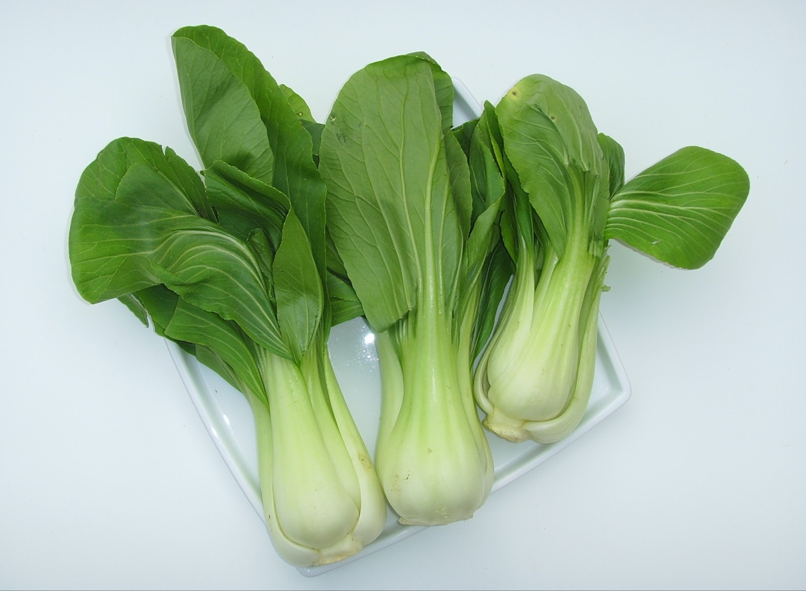
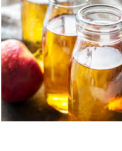
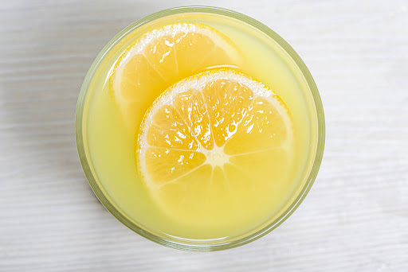
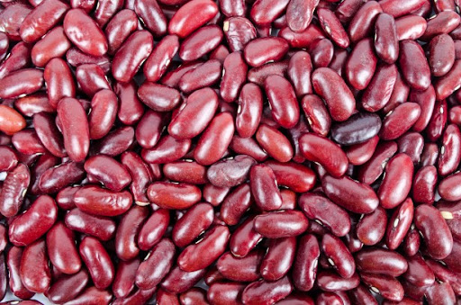
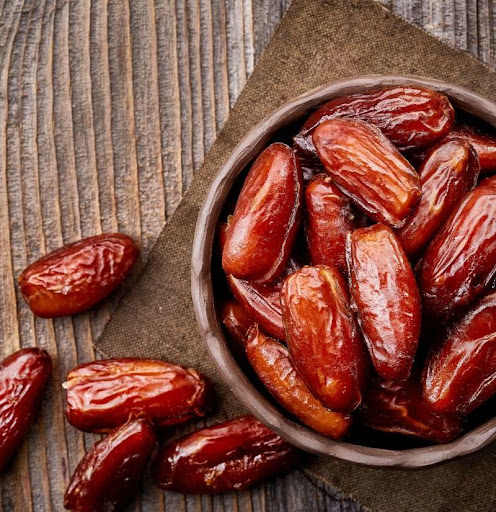
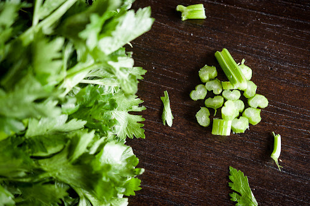

الأطعمة التي تُطهر و تحمي الكلى طبيعياً
إذا كنت تريد أن تعيش حياة صحية، فعليك الاهتمام بكليتك. إن هذا العضو الحيوي هو المسؤول عن تطهير الجسم والدم من النفايات والمواد الأخرى. حيث يتم تصفية نصف كوب من الدم عن طريق الكلى الصحية كل دقيقة. وتنظم الكلى أيضًا كمية السوائل وتوازنها في جسمك وتفرز البول ، الذي يُفرز بعد ذلك عبر المثانة.
للأسف، العديد من سكان دولة الإمارات العربية المتحدة يعتبرون أكثر عرضة للإصابة بمشاكل الكلى، وهذا يعود لارتفاع معدل مرضى السكري. لهذا السبب من الضروري معرفة المزيد عن صحة الكلى وكيف يمكنك حماية كليتيك بشكل طبيعي.
وظيفة الكلى:
للحفاظ على صحة الكلى، فعليك فهم كيف يعملان. تعتبر الكلى نظام لتصفية الجسم، وتلعب دورا مهما في الحفاظ على صحة الجسم بشكل كلي. بالإضافة إلى التخلص من الفضلات والسوائل الزائدة من الجسم، فإن الكلى تعمل مع الكبد لتحويل الأمونيا إلى يوريا و المساعدة في تنشيط فيتامين د، والذي يعد اساسياً لصحة العظام. بشكل عام، يؤدي تكسير البروتين إلى إنتاج الأمونيا، والتي يجب تغييرها إلى يوريا ثم إزالتها. من خلال الحفاظ على صحة الكلى، يمكنك منع مجموعة من المشاكل الصحية، بما في ذلك أمراض الكلى والسكري وارتفاع ضغط الدم.
الأطعمة التي تنظف و تحمي الكليتين:
من أفضل الأساليب لحماية كليتيك هي الغذاء الصحي والمتوازن. إن الأطعمة الغنية بالألياف والبوتاسيوم والمغنيسيوم وفيتامين أ وج مثل الخضار الورقية الخضراء لها فوائد وقائية ضد مشاكل الكلى لدى الأفراد الأصحاء. لكن انتبه، فإن تناول البوتاسيوم والبروتين والفوسفور والصوديوم يجب أن يقلل على الأشخاص الذين يعانون من مشاكل الكلى المتقدمة.
فيما يلي ستة أطعمة صديقة للكلى يمكنها تنظيف وحماية كليتيك بشكل طبيعي:
- بوك تشوي 
- خل حمض التفاح 
- عصيرالليمون 
- الفاصوليا الحمراء 
- التمور 
- الكرفس 
يعتبر Bok choy من الخضروات الصليبية، و يحتوي على نسبة عالية من البوتاسيوم وغني بالفيتامينات A و C و K وقليل من الأكسالات والبروتين. أي كل ما هو مفيد للكلى. لمعرفة المزيد عن الخضروات الصليبية، اقرأ فوائد السلفورافان "SFN": سحر الخضروات الصليبية
يخلق الظروف المثلى لصحة الكلى عن طريق الحد من مخاطر الإصابة بمرض السكري ومشاكل الكلى .خصائصه الحمضية تحمي الكلى، ويمكن أن تساعد في تنظيم مستويات السكر في الدم.
شرب عصير الليمون يساهم في منع تراكم الكالسيوم في الكلى وتقليل خطر تكوّن الحصوات في الكلى. حمض الستريك في عصير الليمون يعتبر مكوّن ممتاز و صديق للكلى. اشربه كعصير ليمون خالي من السكر أو ماء الليمون للحصول على فوائده المتميزة.
لا تشبه الفاصوليا الحمراء شكل الكلى فحسب بل تساهم أيضا في تصفية الكلى. تشتهر أيضا بمحتواها العالي بالألياف الذي يساهم في توازن السكر بالدم والوقاية من مقاومة الإنسولين. توفر أيضا كمية جيدة من المغنيسيوم والبوتاسيوم، مما يقلل من خطورة الإصابة بأمراض الكلى.
تُستهلك التمور بشكل شائع في دولة الإمارات، وهي غنية بالمغنيسيوم، الذي يعتبر فعّالاً في إذابة وإخراج الحصوات. كما تعتبر التمور أيضا غنية بالألياف الذي يساهم في توازن السكر في الدم، مما يجعله مناسبا لصحة الكلى.
يحتوي الكرفس على نسبة منخفضة من الصوديوم وعالية من البوتاسيوم والمغنيسيوم. تلعب هذه العناصر دوراً هاماً في توازن الإلكتروليت والحفاظ على ترطيب الجسم. وكل ذلك يساهم في وقاية الكلى.
الخاتمة
حماية الكليتين أمر بالغ الأهمية للصحة العامة. تأكد من زيادة حصصك من الخضار الخضراء والحفاظ على مستوى السكر في الدم عن طريق الفحص بانتظام، وخفض تناول الكربوهيدرات المكرر. تذكر أن الكلى السليمة ضرورية لحياة صحية.
من خلال دمج هذه الأطعمة الصديقة للكلى في نظامك الغذائي ، يمكنك الحفاظ على صحة كليتيك و جعلها تعمل بشكل صحيح. لذا، ابدأ برعاية كليتيك اليوم واستمتع بحياة أكثر صحة وسعادة! لمعرفة المزيد حول أهمية الماء لصحة الكلى، اقرأ مدونتنا "أهمية الترطيب لصحة الكلى".